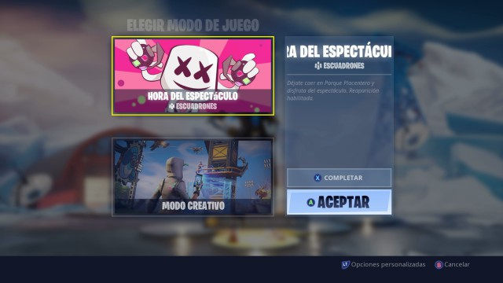
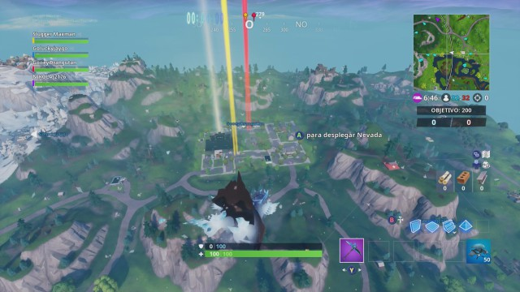
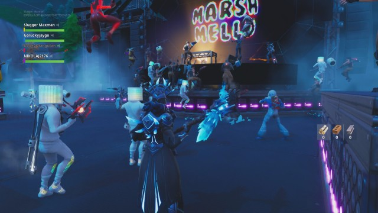
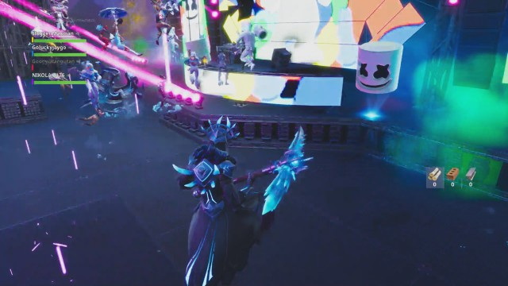
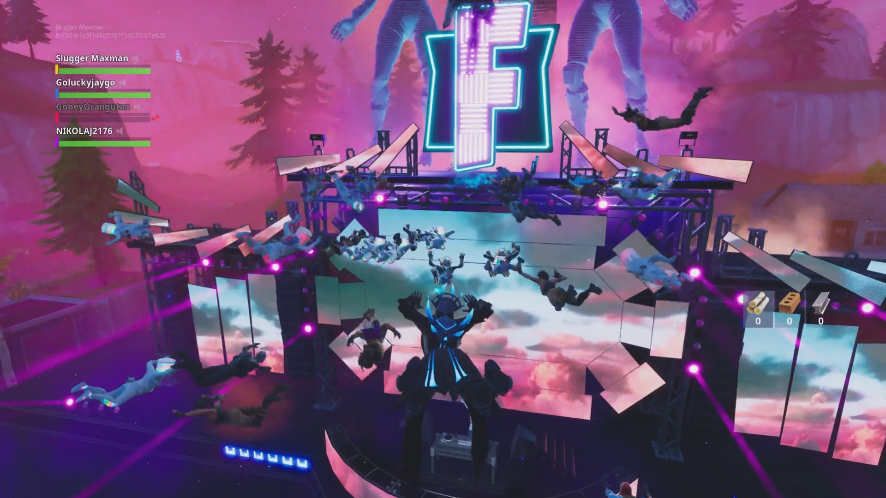
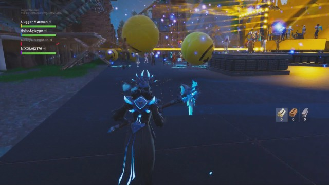

Para disfrutar del concierto de DJ Marshmello, entramos en la única lista de juego disponible: Hora del Espectáculo (escuadrones). Una vez dentro de la partida, estuvimos a las 20:00 en Parque Placentero, el sitio donde tuvo lugar este evento de carácter tan único como limitado.
Al lanzarnos sobre la zona, vimos una enorme cuenta atrás desde el cielo antes de que comenzase el concierto propiamente dicho. Menos mal que había reapariciones, porque la gente es como es, y hubo una carnicería curiosa. Al fin y al cabo, cuando los enemigos están tan quietos, son bajas fáciles. También tuvimos mucho lag; entendemos que debido a una avalancha de jugadores en Fortnite, que se sumaron para disfrutar del evento en directo como nosotros.
Cuando quedaba un minuto para que comenzara el concierto, se deshabilitó la posibilidad de dañar a otros jugadores, para que todos pudiésemos disfrutar sin incidentes de la música.
A las 20:00h en punto, hora española, comenzó el concierto. Fabuoso despliegue de luces, y música electrónica de la mano de DJ Marshmello.
Durante un tramo de la canción, Marshmello pedía a los asistentes que «saltaran», y el propio juego obligó a los asistentes a ello, haciendo que el suelo rebotara automáticamente.
Llegado otro tramo de su sesión, todos los jugadores flotaron por el cielo al ritmo de la música del pinchadiscos. La gravedad bajó a un mínimo, y pudimos dar botes como locos por todo el escenario mientras seguíamos disfrutando de esta sesión de música.
Caen pelotas de color amarillo con caritas sonrientes que podemos hacer rebotar por todos lados, para amenizar aún más la marcha.
Termina el concierto, y Marshmello nos agradece nuestra asistencia.